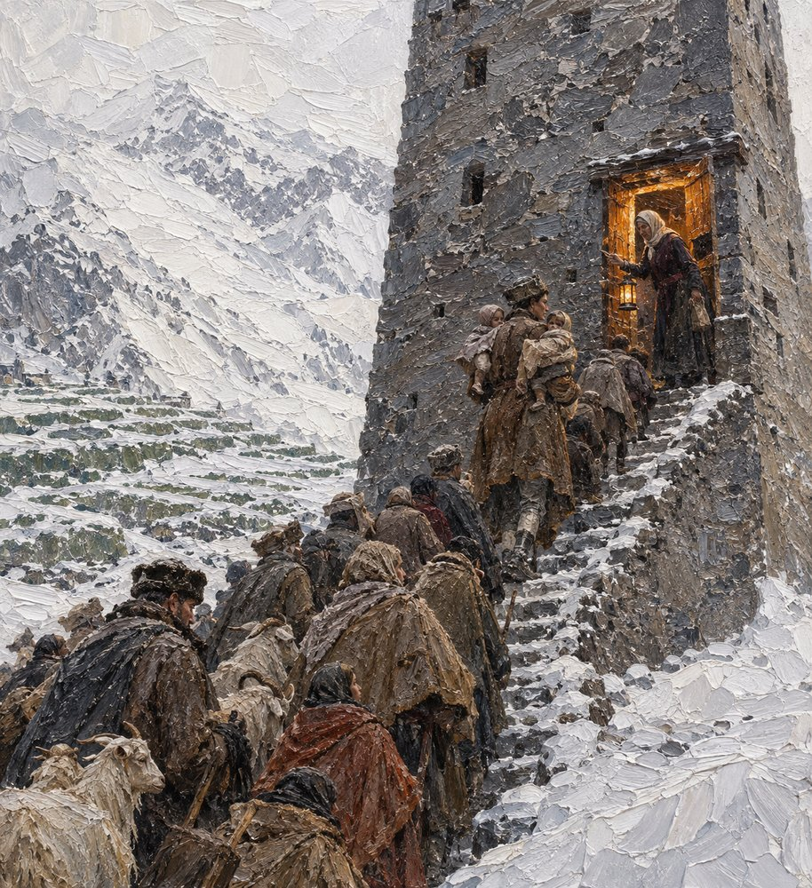

Record 12 of 14
Counting them in
In Eldren of the thirty-first year, with the snow the height of a man at the foot of the tower, the people of Ormeli, fourteen hundred of them, climb the seven storeys of the old refuge with their children and their goats and their ledgers, and Ketevan stands in the doorway with a lamp, counting them in. She counts by tens, as she always has; by the sixth day she has another column to count, and she does not enter it.
Snow covers the terraces and the stone steps of a tall grey tower, and a line of people in cloaks, shawls and fur caps, with children and white goats, climbs the steps toward a glowing lit doorway high on the wall; a woman in a headscarf stands in it holding a lantern, and a broad-shouldered figure in a fur cap near the top carries two small children, against snow-covered mountains.